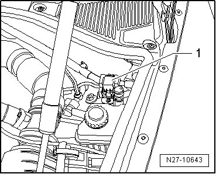
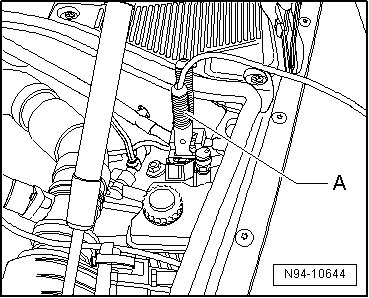
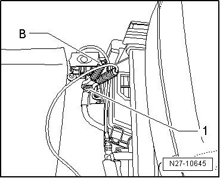

Battery with Cut-off Relay, Charging
Battery with Cut-off Relay, Charging
This description only applies to vehicles before delivery inspection that still have the battery cut-off relay installed.
CAUTION!
Risk of injury. Follow the warnings and safety precautions in the Electrical Equipment General Information manual.
CAUTION!
To prevent damage to the battery or the vehicle, see the information on battery types in the Electrical Equipment General Information manual.
CAUTION!
Batteries that have a colorless or light yellow visual indicator must not be tested or charged. Jump starting must not be used!
There is a risk of explosion during testing, charging or jump starting.
These batteries must be replaced.
• The battery cut-off relay prevents the battery from being discharged, for example from unnecessary electrical consumers.
• Because the battery may discharge itself in its resting state, it must be checked and recharged regularly when the no load voltage reaches < 12.5 Volt. Follow the specifications in the program for inventory vehicles.
• The battery cannot be charged via the jump start point in the engine compartment when the battery cut-off relay is installed because the relay ends the charging process after approximately 10 minutes.
• Always follow the special instructions for charging vehicle batteries with the cut-off relay installed.
Connecting the battery charger cable:
CAUTION!
• Park the vehicle in a location that is protected from the elements.
• The vehicle could be damaged if water entered.
• Make sure the open vehicle doors will not be damaged.
• See the information under Battery in the "Electrical Equipment General Information" manual.
- Switch off ignition, switch off all electrical consumers and remove ignition key.
- Open the positive terminal cap - 1 - on the jump start point.

- Connect the battery charger positive clamp - A - to the jump start point positive terminal in the engine compartment.

- With the driver door open, connect the battery charger negative clamp - B - to the battery ground cable - 1 -.

- Switch battery charger on.
Disconnecting the battery charger cable:
CAUTION!
• There is the risk of an explosion.
• Switch the charger off before disconnecting to prevent sparks.
• Producing sparks through electrostatic discharge must also be avoided.
- Switch the charger off.
- Disconnect the battery charger.
- Close the positive terminal cover on the jump start point.